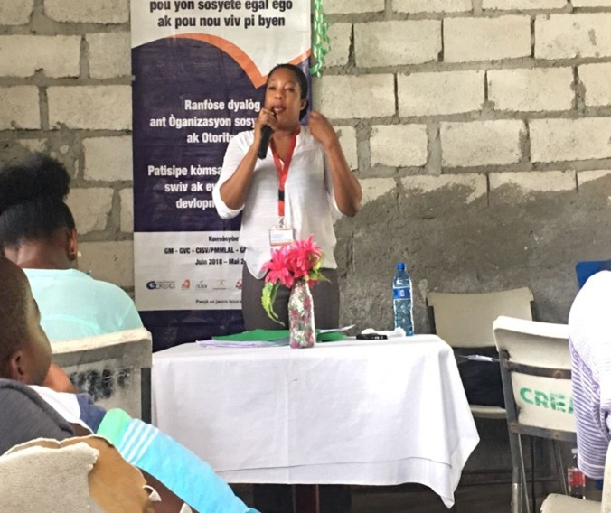
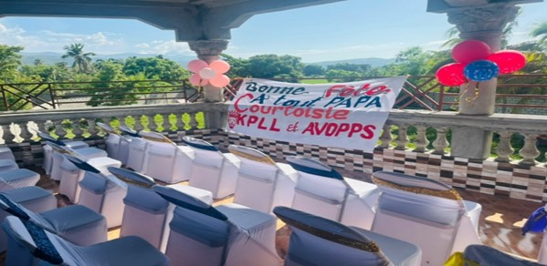

AVOPPS
Action et Volontariat de Prise en Charge Psychosociale
Action et Volontariat de Prise en Charge Psychosociale
AVOPPS intervient dans les communautés de l'Artibonite à travers des programmes de prise en charge, de formation et d'accompagnement économique.
Défiler
AVOPPS œuvre pour le bien-être des communautés de Petite Rivière de l'Artibonite par un soutien psychosocial permanent, une lutte pour l'accès équitable à l'éducation et une autonomisation économique par des initiatives d'économie sociale solidaire.
Nos projets sont conduits en partenariat avec des organisations locales — dont KPLL (Konbit Pou Lapè Lakay) — et bénéficient du soutien du consortium TPFA et de l'Union européenne.
KPLL, consortium TPFA, CISV, PROGETTOMONDO, GVC, CONHANE.
Toutes nos interventions sont conduites à Petite Rivière de l'Artibonite.
Cofinancement Union européenne dans le cadre du programme TPFA.

Des programmes concrets menés directement sur le terrain depuis 2013.
Appui aux familles déplacées, groupes de parole et accompagnement des victimes de traumatismes — notamment en partenariat avec KPLL lors des crises d'insécurité dans l'Artibonite.
En savoir plusOrientation professionnelle pour 100 jeunes par an, concours du Génie scolaire avec plus de 20 écoles participantes, et séminaires animés par des spécialistes locaux.
En savoir plusFormation en gestion financière et marketing (projet ATECPRA). 11 commerçants ont reçu un appui de 24 000 gourdes, grâce au financement de l'UE via le consortium TPFA.
En savoir plusBénévoles, partenaires ou donateurs — contactez-nous pour discuter de la meilleure façon de contribuer aux projets en cours à Petite Rivière de l'Artibonite.